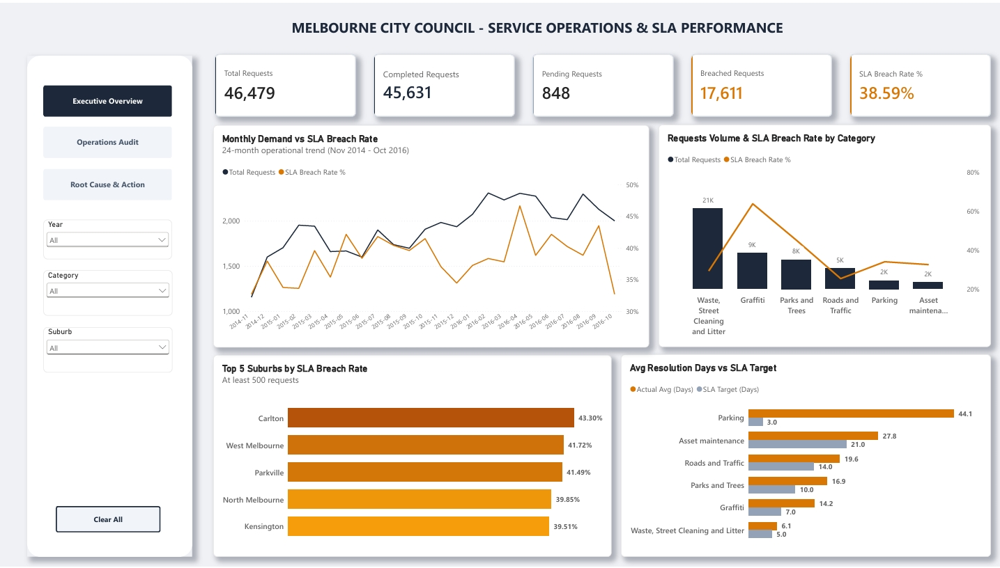

City of Melbourne:
Council Service Operations & SLA Performance Analytics
An end-to-end operational BI audit analyzing 46.5k council service requests: diagnosing a 38.6% SLA breach rate, auditing an 848-ticket backlog delayed up to 708 days, and formulating data-backed dispatch and tiered SLA recommendations.
